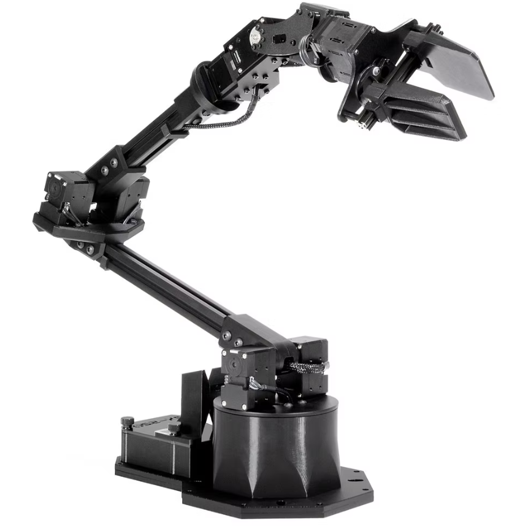
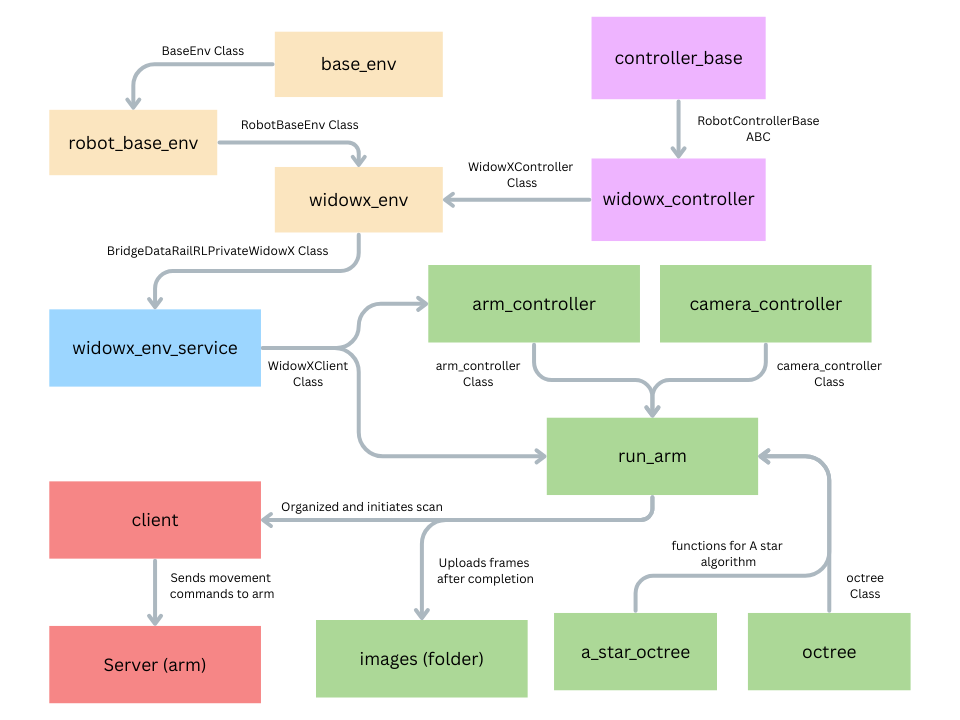

Arm Movement and Kinematics
Arm Used
For this project we used the Trossen Robotics WidowX arm. This was mainly due to our easy access to both the arm and previous work that had been done with it.

Arm Control & Kinematics
In order to control the arm we used an adapted version of the repository below.
https://github.com/rail-berkeley/bridge_data_robot
This utilized the Interbotix Python API to provide high-level commands with
which to control the arm. Specifically, through using the bridge we were able to
complete all of the movement and control needed for our project using just
client.move(). This let us focus on our Specific project and path planning
rather than low-level control.
Due to the libraries and repository used, we didn't work directly with the
inverse Kinematics behind the scene. The built in client.move command allowed
us to input end effector positions and it would find the complete the motions
needed to reach them.
There are limitations to the inverse Kinematics system used however, as the numerical inverse kinematics model used was not 100% consistent with finding a path. Due to this, when performing larger movements, such as to the initial scanning position, we added multiple steps in between to increase the chance of it finding the right outcome.
WidowX_Arm System Diagram & Explanation

The diagram above shows the core components and files used to control the Trossen WidowX Arm
base_env: Initializes a base environment class for robotics or simulation applications.
robot_base_env: Initializes a class that inherits from base_env but designed to be specific to robotics applications.
controller_base: Initializes base class for creating a controller for a robotic arm.
widowx_controller: Initializes a class that inherits from controller_base for controlling the Trossen WidowX robot arm.
widowx_env: Initializes a class that inherits from RobotBaseEnv for interacting with the Trossen WidowX arm. This class creates the controller and adds basic functionality.
widowx_env_service: Creates WidowXActionServer and WidowXClient classes, allowing Python files to interact with the arm.
arm_controller: Creates our custom arm controlling class, allowing run_arm to continually add points to a trajectory list.
camera_controller: Creates our custom camera controlling class, allowing run_arm to get constantly updating depth and video imaging and store frames for gaussian splatting
a_star_octree: Connor
octree: Connor
run_arm: Initializes the arm_controller, camera_controller, and octree classes, manipulating the arm to complete a full circle scan before beginning the a star path optimization.